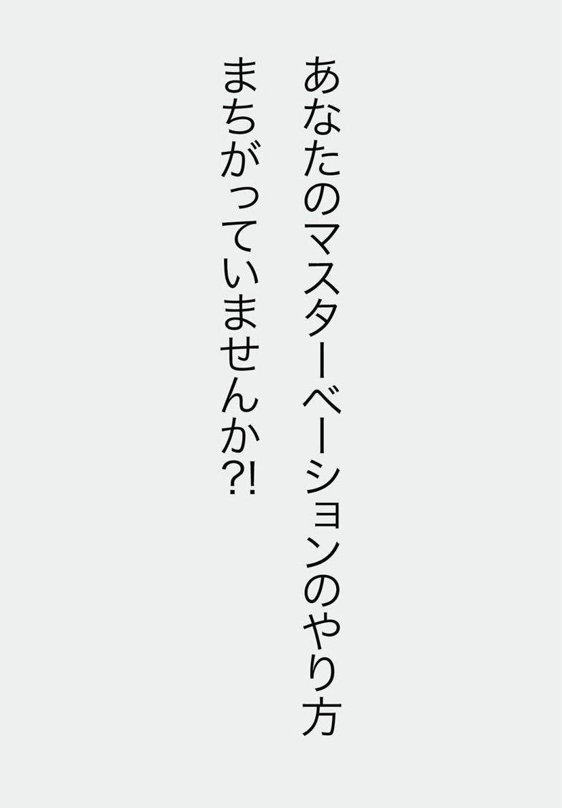
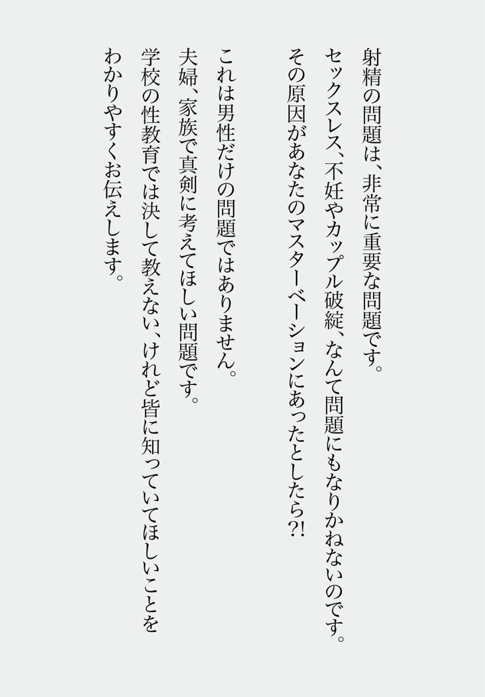
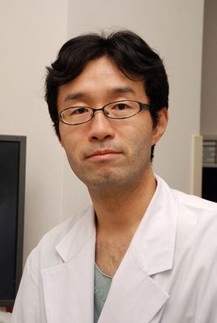

🏠
日
月
縦書き／横書き
| 泌尿器科医が教える「正しいマスターベーション」 カップル、夫婦、家族で考えよう！自分の種と子孫を絶やさないためのムスコ運用法 (impress QuickBooks) | |
| 小堀善友 | |
| (2013) | |


はじめに
《第１章 射精障害予備軍のオトコたち》
◆オナニー（マスターベーション）のススメ
◆あなたのオナニーの方法、間違ってます！
◆性生活習慣の改善から始める正しいマスターベーション
◆オトコだったら"誰でも射精できる"なんて錯覚です
◆オトコに正しい射精教育を！
《第２章 男の"モノ"と障害あれこれ》
◆勃起はオトコにとって一大事
◆タマの大きさも重要です
◆陰のうの定期チェックも忘れずに
◆男の大問題、射精障害アレコレ
◆こんな身近な病気が射精障害の原因に
◆前立腺がん手術後に起きる勃起障害
◆包茎手術が、オトコの射精の邪魔をする!?
◆早漏を治して候（そうろう）
◆たちっぱなしは、実は危険な病気です
◆射精は男のアンチエイジング
◆たたぬ病気の特効薬
◆めぐりめぐって勃起障害
《第３章 不妊と男と女と》
◆不妊の原因の半分は男性です
◆射精したけど精子がいない!?
◆卵子だけじゃない、精子だって老化する
◆精子の若さを保つには、抗酸化すべし
◆サプリメントが精子に効く？
◆セックスに適切な年齢
◆性欲障害でセックスレス
◆セックスレスは２人の問題
◆子供を作りたくても作れない!?
◆繊細なオトコゴコロと子作りのススメ
おわりに
著者プロフィール
奥付
はじめに
私、小堀は、泌尿器科専門医として、男性不妊治療を専門に行っています。
外来には、非常に多くの射精障害、勃起障害の患者が訪れます。
近年勃起障害の治療は、バイアグラなどの治療薬が出たおかげで、治療方法が確立しました。ですが、そこに隠れていた射精障害患者が増加傾向であるといわれています。不安や悩みを抱えている男性が世に多くいるということです。
射精障害をご存知ですか？ 射精障害は意外と知られていない病気です。
射精障害でも、種類がいろいろあり、それぞれ治療方法が異なります。
また、知識を得て「予防」していくことができるような病気でもあります。
ただ、「射精ができない」という状況は決して笑えるものではありません。
たとえば、子供を作るときには必ず射精をしなくてはなりません。
また、パートナーとの関係性を保つ上でも、非常に重要なこととなります。
女性側からすると、「なぜ私で射精してくれないのだろう？」という疑問から始まり、良好な関係を保っていたカップルが破綻してしまう原因となる可能性があります。
射精の問題は、非常に重要な問題なのです。
本書は、そんな男性の勃起障害（ＥＤ）、「膣の中で射精ができない」射精障害、男性不妊について、説明していきます。
男性がイキイキと過ごせるヒントを、パートナーの女性が男性を理解する一助になればと思っています。
◆オナニー（マスターベーション）のススメ
オナニーについて、「そんなこと、いまさら何を」とお思いでしょうが、ちょっとここで真剣に考えてみませんか？ というのもオナニーのやり方次第で、射精障害、そして不妊、なんてこともあるのですから。
オナニーは、旧約聖書に出てくる「オナン」が語源らしいです。
オナンは、膣外射精をしてしまったために神様に罰せられてしまったのだとか。
西洋では、生殖の目的を持たない性行為は罪悪であるという考えが以前は強かったらしいです。かつて昔は、精液を失うために病気が起こり、心身を破壊するとの極端な意見を述べる医師もいたそうな。
しかし、この考えは、20世紀に性の研究が進んでくるにつれて改まったようです。
生殖の観点から見れば、「週に１度は射精したほうがよい」と私は考えています。古い精子を在庫処分して、常に新鮮な精子を品揃えしたほうがよいからです。
２０１０年にＷＨＯ（世界保健機関）から、新しい精液検査のマニュアルが出されました。その中には、「精液検査をする際は、前の射精より２～７日間あけてからの検査が望ましい」とされています。
精巣から精子が出てきて、射精までの間に精管や前立腺に長くとどまると、運動率が低下したり精子のしっぽの部分が短くなります。つまり、奇形が増えてしまうのです。
精子の健康のためにも、射精はしたほうがよいのです。そして、精子がよくなれば、妊娠の可能性も高くなります。
不妊症外来に来られるカップルには、セックスでもオナニーでもよいので、週に１度は射精することをおすすめしています。
週に１度の射精で、身体と心と精子の健康を！
◆あなたのオナニーの方法、間違ってます！
「あなたは、どんなふうにオナニー（マスターベーション）をしていますか？ そのオナニーの方法、本当に正しいですか？」
こう聞かれるとちょっと不安になってしまいますよね。
オナニーは、男性にとって重要です。オナニーの方法を間違っていると、それが原因で射精障害となり、男性不妊となってしまう可能性があるのです。
では、どんなオナニーの方法が間違っているかを、説明しましょう。
［１］ふとん、または畳にこすりつけるようなｐｕｓｈ法
「押し付ける」形のマスターベーションです。
本来なら、手のピストン運動で射精すべきなのですが、圧迫して、手を使わないで射精してしまいます。これでは膣の中では感覚が違うので射精できません。
［２］強く握りすぎてしまうマスターベーション
いつものマスターベーションの刺激が強すぎるために、膣内ではあんまり感じない、というパターン。パートナーの女性の膣がゆるいわけではありません。
［３］ある特定の体位でないと射精できない
多く見かけるのは仰向けで足をピーンとのばしていないと射精できない、という人。ならば、騎乗位なら射精できるのではと思うのですが、なかなか簡単にはいきません。
［４］包茎手術の術後
手術で切除される余剰包皮（つまりチンチンの皮の余った部分）には性感帯があります。そこを切除してしまったために感じにくい状態になり、射精がしにくくなり、射精障害になってしまうことがあります。
［５］ひとりでないと射精できない人
意外と、こういう人も多いです。
これらの方法でオナニーをしている人は"射精障害"になりやすく、膣の中で射精できないため、"男性不妊"となってしまう可能性があるのです。射精障害の治療の際には、正しいマスターベーションの方法を教えることから始まりますが、なかなか簡単には治らないのが現状です。
ここで説明した間違ったオナニーをしている方、「もしかして......」と不安を感じた方は、泌尿器科にどうぞ。泌尿器科医は性機能についても相談に応じてますから、恥ずかしがらずに相談してくださいね。
男性にとって、正しいオナニーの方法を身につけることが、なによりも大事なことなのです。
◆性生活習慣の改善から始める正しいマスターベーション
射精に絡まる問題は、人それぞれ、カップルそれぞれであります。
日々、射精障害に悩む男性と、そのパートナーと接する私は、射精に絡まる問題すべてを「射精障害」とひとくくりにはせず、「早漏は脳の病気、遅漏は性生活習慣病」とまったく違う病気ととらえています。
早漏の原因は脳中の物質であるセロトニンが関係していると考えられています。
セロトニンの取り込みを阻害するＳＳＲＩという抗鬱薬が治療に効果的です。最近の研究では、トラマドールという痛み止めも効果があるといわれています。
脳内物質だけが原因というわけではなく、早漏も様々な原因が複雑に絡まりあって起こることがあります。ここでは、わかりやすいように簡単にわけて説明をしています。
遅漏（膣内射精障害）は、早漏とはまったく違う病態です。
決して、「早い」の反対は「遅い」ではないのです。
遅漏の場合、思春期からのマスターベーションの方法や、アダルトビデオの見過ぎで性的興奮をする対象が特殊になってしまっていたり、夫婦関係の問題であったり、現在までの生活習慣が大きく関係していると考えられます。生活習慣病の治療をどうするか皆さんご存じですか？
それは、「生活習慣を見直す」ことから始まります。
性生活習慣の改善として、まずは正しいマスターベーションをおすすめいたします。
遅漏の人で間違ったマスターベーションとして最も多く見られる方法は、床に陰茎をこすりつけるオナニー、通称「床オナ」です。
今こそここに声を大にして、みなさんにお伝えしたいこと、それは
「床オナをしている人は、すぐにやめてください！」
です。
こんなことは、学校の性教育では教えてもらえないと思われます。
しかし、不妊症の現場では数多くの患者さんが悩んで受診されることから、今現在、床オナをしている射精障害予備軍の方がたくさんいるのではないかと考えられます。
だからこそ、この場を借りて「床オナ禁止」を宣言させていただきたいと思います。
ぜひ、悩める男性を救うため、「Ｓｔｏｐ！ 床オナ」キャンペーンをしてくださるような企業があるとよいのですが......。
ちなみに、国際性機能学会のガイドラインでも、「遅漏治療の最初の対策は教育である」と明記されています ―― Patient education regarding existing factors that can exacerbate delayed ejaculation is an important first step and may represent a segue into either short-term or long-term counseling.
勃起は生理現象であり、誰に教わらなくてもできるものです。
その一方、射精は勃起と異なり、それに至るための行為が必要となります。誰かが正しい射精の方法を教え、それを自分自身で訓練して習得する必要があるのではないかと考えています。
◆オトコだったら"誰でも射精できる"なんて錯覚です
日本思春期学会で、興味深かった話を紹介しましょう。聖隷浜松病院（静岡）の泌尿器科医、今井伸先生の講義内容です。
［童貞と処女のカップルの悲劇］
恋愛結婚して１年半の夫婦のケース。ふたりとも婚前にセックスの経験はありませんでした。結婚後、セックスをしようとしましたが、うまくいかないのです。
夫は、妻には内緒でマスターベーションをしていて、入浴時に、浴室の壁にペニスをこすりつける方法で、ほぼ毎回射精にいたっていました。
このカップルには問題点が３つあります。
（１）夫婦そろって、新婚初夜までセックスとは具体的にどうするものかわかっていなかった。
（２）夫はマスターベーションの方法も、普通とは異なったやり方でしていた。
（３）夫は女性生殖器（膣や子宮）についてほとんど知らなかった。
夫は、マスターベーション（射精）やセックス、女性生殖器に関して具体的に教えてもらった記憶がなく、あまり興味を持ったことがありませんでした。
そのために起きた悲劇といえるのかもしれません。
「セックスやマスターベーションは誰かに教えてもらうべきなのか？」
「それとも自ら学習するべきなのか？」
「学習するとすれば、そのタイミングはいつなのか？」
今井先生の講義を聞いて、私は考え込んでしまいました。
大事なことなのに、正しく教わる機会はほとんどありません。
成人男性は、あたりまえのように「射精」できるものと思われていますし、マスターベーションの手技を習得しているものと思われています。
「実は、そうでもないぞ」と、不妊症の外来をしている私は常々思っていました。
不妊症外来には「上手に射精できない」人や、「セックスができない」人がたくさん訪れているからです。多くは、結婚をして子供を作るときにうまくいかないため、切羽詰まって診察に訪れています。
未婚のカップルや、間違ったマスターベーションをしている青少年などの「射精障害予備軍」は、もっとたくさんいることでしょう。
聖隷浜松病院の泌尿器科医、今井伸先生によると、射精というものは、成人男性なら当たり前にできるということではないのだそうです。夢精と違い、セックスやマスターベーションのような意図的な射精は、「習得していく技術」だというのです。
つまり、箸や鉛筆の持ち方（使い方）を習うように、ペニスの持ち方（使い方）も習う必要があり、そのためには「適切な時期に射精技術の習得を開始する必要がある」とのお考えでした。
今井伸先生の話を聞いて、多くの射精障害の患者さんを診ている私としては、「なるほど、そうだったのか」と、目からうろこが落ちた気分でした。
◆オトコに正しい射精教育を！
女子学生には、産婦人科の医師たちが性教育を担当しているケースがよくあります。その一方、男子学生に対し、専門的な性教育が行われることが少ないのが現状です。男性学（アンドロロジーといいます）を専門とする泌尿器科医の出番なのですが......。
私自身が性教育として、男子学生に講義をした経験はわずかしかありません。
これは、泌尿器科医が男子性教育を担えるということが周知されていないこと、泌尿器科医の中でも、男性学や感染症の専門家が少ないという現状があると思われます。
私は、日々セックスや射精または性感染症など、さまざまな性の問題を抱えるカップルを診療している経験から、正確な情報を与えるための教育は必要だと考えています。
学会では「昔は地域によって『性』について年長者から教わっていくような慣習があったが、現在はそのような性的な話題がタブー視されており、かえって情報が得られなくなってしまったのではないか」との意見も出されました。
また、インターネットが普及し、ネットで気軽にアダルトビデオをダウンロードできたり、アダルト画像を閲覧でき、性に関する情報があふれかえっている現代ゆえに、かえって正確な情報は得にくくなったという指摘もあります。私も、そんなネット世代の問題を感じています。
セックスを経験する前に、一般の性行為からかけ離れているような画像ばかり見てしまい、現実離れした行為でしか性的興奮が得られなくなってしまった男性も外来に訪れるからです。
性教育で性交の経験率や性感染症などはしばしばテーマとして扱われますが（これも、とても重要なことです）、マスターベーションの方法など、射精について扱われることが少ないのは残念なことです。適切なマスターベーション教育により、将来不妊に悩むカップルを減少させる可能性があると考えられます。
「少子化を迎えた今日、予防医学の点からも、男性の性教育における射精教育の重要性を認識する必要がある」と、今井先生は結ばれました。とても勉強になりました。
私自身も、診察室で困った患者さんを待つだけでなく、小さなことでもいいので、男性の性教育に関わっていけたらと、心から思っています。
◆勃起はオトコにとって一大事
「最近、朝立ちしなくなったな～」と感じていませんか？ 加齢が理由だと思いがちですが、もしかしたら、大きな病気が隠れているサインかもしれません。
勃起障害（ＥＤ）は、動脈硬化により血管が詰まってしまうため、勃起ができなくなってしまう血管と神経の病気です。糖尿病などの、神経の障害でも引き起こされます。
もし、動脈硬化が原因でＥＤになったとしたら、次は心臓の血管が詰まってしまうかもしれません。
陰茎の血管は１～２mmと非常に細いので、動脈硬化などの血管の不調は、まず勃起障害になって現れるのです。
実際、勃起障害の人は「心血管系の死亡率が２倍になる」というデータも出ています。勃起障害は、心筋梗塞や脳梗塞よりもずっと前に起こる症状なのです。
つまり、勃起障害はオトコが最初に自覚できる身体の不調、健康のバロメーターであるといえます。
ＥＤをきっかけに生活習慣を見直すことは、性生活のためだけではなく、全身の健康のためにもなるのです。
◆タマの大きさも重要です
タマ（精巣）も、男性の大事な性徴のバロメーターです。自分の精巣を自己触診することは、病気の早期発見に繋がります。
触診の仕方は簡単です。
精巣は楕円形。その長径が４cm以上あれば精巣容積15ml以上あることになるので正常、しかし３cm以下の場合は６ml以下であり、高校生以上の男子では注意が必要です。
自己触診して精巣の大きさが明らかに小さい場合、ホルモンの異常があって大人になりきれない、二次性徴の発達障害の可能性があります。また、精子の数が少なくなっている男性不妊の可能性があります。
また、精巣に硬いしこりがあったり、明らかに左右の大きさに違いがある場合は精巣腫瘍という悪性の腫瘍の可能性があるのです。
精巣腫瘍は若年男性に多く見つかるがんであり、非常に転移しやすい性質を持っています。
病気の早期発見のためにも、たまにする"タマのチェック"は、オトコのために重要なミッションです。
◆陰のうの定期チェックも忘れずに
陰のうの中には、精子を造る臓器・精巣があります。
精巣の温度は、わきの下ではかる体温より２～３度低くなるようにできていて、陰のうがラジエーター（冷却装置）の役割をしています。
陰のうの温度が33度くらいの環境だと、精子ができやすくなるからです。逆に陰のうの温度が上がってしまうと、精子ができにくくなってしまうのです。
ひざにノートパソコンを置いて使う人もいるようですが、要注意！ ひざでノートパソコンを使用することによって陰部の温度が上昇したという研究や、パソコンから出る電磁波からも精子に悪影響を及ぼすという研究もあります。その研究では、ひざの上でノートパソコンを使うと精子が減る可能性があるので、「机の上で使うように」とすすめています。
［チェックをおろそかにしていると......］
精索静脈瘤といって、陰のうの周りに血管の塊ができる病気があります。
この塊ができると、陰のうの温度が上昇し、酸化ストレスがかかることによって、精子ができにくくなることがわかっています。
また、精巣が陰のうの中に降りてこない停留精巣という病気があり、精巣が鼠径部（恥骨の横、足の付け根）の付近でとどまっている場合が多いです。停留精巣をそのままにしていると、精巣がんになりやすいのです。
精巣がんは、20～30歳代の若い男性に多く、非常に転移しやすいのが特徴です。停留精巣の場合、精巣がんになるリスクが通常男性の10～１００倍になることがわかっています。これは非常に重要な問題です。命に関わる可能性があるだけでなく、将来的に、精子ができにくくなり、男性不妊の原因になる場合もあります。
陰のうに異変がないかチェックをするように心がけてください。
◆男の大問題、射精障害アレコレ
テレビや雑誌などで話題になっていますから、勃起障害（ＥＤ）がどんな症状かご存じの方は多いでしょう。
勃起障害とは、セックス可能な勃起状態にならない、あるいは勃起が維持できず、満足なセックスができない状態のことをいいます。心理的な要因、糖尿病など別の病気が原因で、勃起障害はおこります。
勃起障害にくらべると、射精障害について、ご存じの方はあまりいないかも知れませんね。射精障害とは、勃起に問題がないのに射精ができない状態をいいます。
早漏、遅漏、膣内射精障害、逆行性射精などが、射精障害に分類されます。
［早漏］
挿入したら、すぐに出ちゃうことです。
すぐ出ちゃうことではありますが、早漏の定義はいろいろとあります。
例えば、「挿入後30秒～２分以内で射精してしまう」という時間を基準とする定義もあれば、「セックスの際のピストン運動が10回以内で射精してしまう」など性交運動の回数を基準とするものもあります。
一般的には、相手の女性が満足できない間に射精してしまう、ということが早漏の定義とされています。
早漏の治療にはセックス・セラピーが非常に有効です。行動療法と薬物療法の２種類があります。
行動療法として、セマンズ法もしくはスクイーズ・テクニックが有名です。
簡単に療法の内容を説明すると、「射精しそうになったときに我慢する」これを何度も繰り返すというものです。
薬物療法として「とある抗鬱剤が早漏に有効である」という報告が数多くあります。アメリカでは、薬物による早漏治療が一般的に認められています。
有効度は非常に高いため、有望な薬剤と考えられますが、攻撃性が高まるなどの副作用も報告されており、専門医による処方が必要です。
［膣内射精障害］
オナニー（マスターベーション）では射精できるのに、セックスのときに女性の膣の中で射精することができないことをいいます。
膣の中で射精できない理由は様々ありますが、思春期の頃からオナニーの方法を間違えていることが原因となっていることが多いです。
また、心理的な理由でなる場合も多く、不妊治療をキッカケに勃起障害や膣内射精障害になることもあります。そこから、セックスレスに繋がることも少なくありません。
マスターベーションの方法を間違っていたことが原因の場合、治療は非常に困難となります。
強すぎるマスターベーションが原因である場合は、弱い刺激で射精できるように慣れていくしかありません。
膣内射精障害の治療には、手を使った柔らかいグリップによるピストン運動（スラスト法）がすすめられます。
ＴＥＮＧＡを代表とするマスターベーション補助具を使用して、ピストン運動による射精に慣らしていく方法もすすめられていますが、治療時間がかかる場合が多いです。
不妊に悩んでいる膣内射精障害の男性の方で、子供を作ることが第一希望である場合には、治療に時間をかけるよりも人工授精がすすめられます。
［逆行性射精］
射精感はあるのに、非常に少量の精液しか出なかったり、精液が全く出ないのに、膀胱内に精液が逆流してしまう状態になります。
糖尿病や、手術によって神経が切断してしまった場合に起こりえます。
治療は、薬物療法が一般的であり、半数の患者は射精できるようになります。
◆こんな身近な病気が射精障害の原因に
射精障害・勃起障害になってしまうのには、きっかけがあります。
たとえば、心理的な要因であったり、マスターベーションの方法によるものであったり、病気であったり......様々な原因があるのです。
［１］糖尿病
射精障害の患者さんのなかで、最も多い原因は糖尿病です。
最近では、若年者にも糖尿病が増えてきているので注意が必要です。
糖尿病になると、体中の血管がボロボロになるばかりでなく、目が見えにくくなったり、尿を作る腎臓の働きが悪くなるだけではなく、神経にもダメージがあるため、射精ができなくなってしまいます。
糖尿病の射精障害で特徴的なのは、逆行性射精といって、射精感はあるのに精液が出てこなくなり、膀胱の中に精液が逆流してしまうという状態になってしまうこと。精子は尿に触れると弱ってしまうので、深刻な不妊症問題となります。
［２］鬱
鬱病自体が勃起障害、射精障害の原因となりますが、抗鬱剤のお薬も勃起・射精障害の原因となりえます。
また、抗鬱剤のお薬のなかには、精子を作る機能を落とす可能性があるものがあります。だからといって、勝手に内服を中止してしまうのは非常に危険です。主治医と相談が必要です。
［３］包茎手術後
意外と多いのが、包茎手術による射精障害です。
「男はたっていなくても亀頭が出ていないとダメなんだ！」と思っている人も多いですが、仮性包茎で普通にセックスができる人に、私は手術をすすめません。必要のない包茎手術はさけたほうがよいでしょう。
［４］ホルモンの低下
加齢で男性ホルモンが低下すると、勃起や射精がしにくくなっていきます。
非常に稀ですが、脳下垂体の異常によって、若くして男性ホルモンが低下してしまう場合があり、射精障害・勃起障害になってしまうことも。
その他、腹部の手術や脊髄の障害、交通事故などいろいろ原因はありますが、どれも専門的な診察が必要になります。
若くして勃起や射精の問題があるときや気になることがあれば、悩まず、怖がらずに泌尿器科の門を早めに叩くことをおすすめします。
◆前立腺がん手術後に起きる勃起障害
前立腺がんの手術には、さまざまな合併症が起こる場合があります。代表的なのは、尿失禁がありますね。
そして、オトコとして深刻かつ重大な合併症に「勃起障害」があります。
前立腺の周囲には、勃起に関わる神経が走っています。手術で前立腺を摘出する際に、どうしても、その神経を切断せざるを得ない場合があるのです。そうなると、勃起ができなくなってしまいます。
しかし、１００％大丈夫というわけにはいかないのですが、勃起障害を防ぐための方法がいくつかあります。
［神経温存手術］
勃起をするための神経を残す手術です。神経を温存しない手術よりも、繊細な技術が必要で、とても難易度が高い手術です。がんの位置によっては、温存できなかったり、温存しても勃起ができなくなってしまうこともあります。また、温存しても勃起が完全に戻らない場合もあります。
［勃起のリハビリ］
術後、比較的早い時期に勃起治療薬（バイアグラ・レビトラ・シアリスなど）を使うことで、勃起の能力を改善させることができるという報告があります。
前立腺がんの手術では、事前に起こりうる合併症について説明し、「勃起の神経を温存するかどうか」を決めます。
でも、そのときに......患者さん自身が希望を言う前に、奥様のほうから「切っちゃってください」と、すぱっと言われちゃうことが意外に多いんですよね。
すべて切り取ってしまったほうが、がんの再発や転移の心配がないと考えているのか、はたまたもう夫婦生活がないから不要と思っているのか、どちらなのかはわかりませんが......。
もし、前立腺がんと診断され「勃起の神経を温存するかどうか」の選択をしなくてはならなくなったときは、「勃起はオトコにとって一大事」であることを、奥様にも理解してもらったうえで、納得した選択をしてほしいなと思っています。
◆包茎手術が、オトコの射精の邪魔をする!?
射精障害の原因の中で、意外と多いのが包茎手術による合併症です。
他のクリニックで手術した後に、ちんちんの皮の下に血の塊をつくって真っ黒ちんちんになってしまった人や、皮を切りすぎたために勃起時に痛みを訴える人がいます。
また、包茎手術で包皮を削除したことが原因で感じにくくなった人が、最終的に射精障害になってしまうこともあるのです。
泌尿器科医にとっては、包茎手術は最も初歩的な手術のひとつ（これはこれで奥が深いのですが）。
私も研修医をすぎた若い頃など、３月と８月になると、ちょくちょく包茎手術をしていました。べつに３月と８月が、包茎手術のベストシーズンなわけではありませんが、春休みと夏休みになると「この夏（春）でデビューしてやるぜっ！」と、鼻息荒く病院を訪れる若者が多くなるのです。
たくさんの若者が病院に訪れますが、本当に手術が必要な包茎の人は、そんなに多くありません。
勃起しても亀頭部が出てこない「真性包茎」と、勃起すると亀頭部の根元が閉まってしまい、そのままにしているとむくんでしまう「カントン包茎」のふたつは、手術を必要とします。
ですが、非勃起時に皮かむりの状態で、勃起時には亀頭が露出するいわゆる「仮性包茎」は、一般的には手術の必要ありません。
どの手術もそうですが、合併症のことを理解し、必要性を納得したうえで、手術を受けてください。
マスコミやネットの情報などに踊らされて「仮性はカッコ悪い」と思い込んでいる若者が多いですが、周りにいる人たちは、あなたのペニスを気にしていません。
あなたは温泉などで、他人のペニスをじろじろ見たりしますか？ もしも女性に対して「恥ずかしい」と思っているなら、それは大きな間違いだと私は思います。
セックスは、ペニスの形や大きさや皮のかぶり具合で決まるのではありません。相手をいたわる気持ちが一番大切なのです。
◆早漏を治して候（そうろう）
「早漏」は、ちゃんとした病名です。
前述していますが、セックスをする際に相手を満足させる間もなく、あっという間に射精してしまう、というもの。早漏も、立派な射精障害なのです。
［リハビリテーション］
昔から、ストップ＆スタート法ということがすすめられておりました。
これは、「オナニーのときにイキそうになったら手を止めてがまんする」ことを３回前後繰り返す、という方法です。
刺激に慣らせていく、ということですね。
ただし、セックスとオナニーは全く別物であり、これだけでは十分な効果が出ない方もいらっしゃると思われます。
［薬物療法］
「ＳＳＲＩ」という鬱病の薬があります。
これが、早漏に非常に効果的であるという報告は多く、アメリカの治療ガイドラインにも載っています。
しかし、ＳＳＲＩは副作用も多いのが欠点です。例えば、基礎疾患の悪化（鬱がさらに悪化する）、自殺念慮、他害行為（他人を襲いたくなる）、攻撃性、錯乱、幻覚など怖いものがあります。中には「精子の受精能力が弱まる」なんてものもあり、少しすすめがたいところがあります。
最近の報告ですが、痛み止めの「トラマドール」という薬が早漏に効果的であるとの報告があります（Tramadol for the Treatment of Premature Ejaculation. Eur Urol. 2011.）。
しかし、日本ではトラマドールはあくまでも痛み止めであり、「早漏」には適応になっておりません。
私が治療する場合は、自費で十分な説明の上、処方して経過を見ている段階です。
他にも、前立腺肥大症のシロドシンという薬が効果的であるという報告もあります（Silodosin and its potential for treating premature ejaculation: A preliminary report. Int J Urol. 2011）。
この薬の副作用として、射精感はあるのに精液が出ない、という副作用が必発します。
私も１錠内服しただけなのに丸２日間射精できなくなってしまい、かなりビビったことがあります。
内服薬ではないですが、麻酔のゼリーをペニスに塗る方法もあります。
面白いのは、海外の論文で「射精障害」を調べると、ほとんどが「早漏」の問題で、「遅漏」や「射精できない」という報告がほとんどありません。
これは、なぜなのでしょうか？ 日本人だけが膣内射精障害で悩んでいるのでしょうか？
今度、国際学会で調べてみないといけませんね。勉強しなければ......（これら薬の情報は、どんどん新しくなっていくため、注意が必要です）。
◆たちっぱなしは、実は危険な病気です
持続勃起症という病名を聞いたことがありますか？ 読んで字のごとく、「勃起し続ける、たちっぱなし」の状態の病気です。
人気作家・奥田英朗さんの、精神科医・伊良部シリーズにも、この病気は出てきていますので、ご存じの方もいらっしゃるのではないでしょうか。
でも、あの小説に書いてあるものと本当の病気はちょっと違います。
正常なら、性的な刺激により興奮し、陰茎に血液が満たされて勃起します。刺激がなくなると、この血液は体内へリリースされます。
しかし、持続勃起症では性的刺激や興奮に関係なく、勃起し続けるのです。
「たちっぱなしなら、全然いいじゃん。むしろ、たたなくて困っている人がいるっていうのに」と思われるかもしれません。
たしかに、セックスなどの興奮や刺激とは関係無しに勃起しっぱなしですから、なんとも魅惑的な響きがあるかもしれません。
ですが、これが、けっこう厄介で困った病気なのです。
なぜ、虚血性の持続勃起症が厄介な病気かというと、４時間以上続いた場合は陰茎が酸素を失ってしまい、有毒な状態になってしまうからなのです。後遺症として、組織損傷や勃起障害などが残ってしまうことがあります。
［持続勃起症（プリアピズム）は２種類］
痛みの有無で、持続勃起症のタイプを、おおむね区別できます。
（１）非虚血性プリアピズム・痛みがないタイプ
海綿体に入ってくる血液（動脈の血液）が多くなりすぎて勃起してしまう症状です。
（２）虚血性プリアピズム・痛みがあるタイプ
海綿体から出ていく血管が詰まってしまい、血液が陰茎より外に流れ出られなくなってしまったために、たちっぱなしになってしまった状態です。陰茎の首を絞められて酸素不足になってしまいます。
［治すためには針を刺すことも］
治療は、虚血性か、非虚血性かによって、方法が異なります。
虚血性なら、陰茎に針を刺して血液を吸引したり、血流を少なくするための薬を用いたりします。
ちんちんに針を刺すなんて、考えただけでも痛そうなのですが......針を刺しても治らない場合は、シャント手術という緊急手術が必要となってしまうのです。つまり、陰茎に流れ込む血液を逃がしてあげる手術です。
非虚血性のときは、しばらくたちっぱなしでも、そのうちに治る場合が多く、日本性機能学会が監修するガイドラインにも、「緊急の処置は要さない」と書かれています。
持続勃起症の原因には、勃起治療薬や抗鬱剤などの薬によるものもありますが、白血病などの血液の重篤な病気が隠れている可能性もあります。
アルコール、コカインやマリファナ、骨盤や会陰の損傷、一酸化炭素中毒。中には、サソリやクロゴケグモの毒によって血液が固まって持続勃起症になってしまったなんて報告もあります。また、ほったらかしにしていると、逆に勃起障害という副作用が起きてしまうこともあります。
世間では、たたない問題は広まっていますが、たちっぱなしなのも、実は危険な病気です。
◆射精は男のアンチエイジング
日本は超高齢化社会を迎えています。
今や、65歳以上の総人口に占める割合は、実に23・３％近くになっております。つまり、４人に１人は65歳以上ということです。
しかし、歳をとってもできれば元気でいたいもの。それは、性機能（勃起や射精）を含めて元気でいられればなおさらです。
最近、性機能を維持していくことがアンチエイジング（つまり、見た目にも中身でも年齢以上に若く保っていくこと）につながっていくことがわかってきています。
勃起障害は、心筋梗塞の前触れ、という論文があります（Debusk: BJU Int. 2006）。
ペニスを勃起させるのに必要な血管（陰茎深動脈）の太さは１～２mm、心臓の冠動脈の太さは３～４mmです。動脈硬化が原因で、ペニスの血管がつまってしまったら、次につまるのは心臓の血管、ということなのです。
週２回以上セックスをする男性は、心血管イベント（心臓の病気によるなんらかの兆候）の発生率が少ない、とのこと（Susan A.Hall: Am J Cardiol. 2010）。
つまり、セックスの回数が少ないと心臓病になってしまう可能性が高くなるかも、ってことになってしまいます。
ちなみに、この論文には特定のパートナーと頻回のセックスをする男性は、心血管の健康を保つことができる、とも書いてあります。
川崎医科大学の永井敦教授は、
「心疾患の多くは動脈硬化が原因となります。射精行為には、勃起を促す海綿体動脈の血流を良くし、血管を柔らかくする作用があります。こうした作用が、血管に良い影響を与えている可能性があります」
と、おっしゃっておりました。
つまり、「セックスを習慣的に行うことは、血管の健康維持につながる」ということがいえるでしょう。
◆たたぬ病気の特効薬
勃起障害には、特効薬があります。
ＰＤＥ５阻害薬という種類の薬のことで、有名なものとしては、皆さんがご存知のバイアグラがあります（他にも、日本ではレビトラとシアリスという薬が使用することができ、約80％の人に治療効果が期待できます）。
勃起障害の特効薬として使われるバイアグラ、実はもともと高血圧の治療目的に作られた薬なのです。
今でも肺高血圧症という難病の治療に用いられています。
勃起障害のある人は、排尿障害を伴うということが知られています。近年、勃起障害の薬を使うと、尿の出がよくなるということがわかってきました（正確に言うと、勢いがよくなったような気がする、ということなのですが......）。
アメリカでは、尿の出が悪くなる前立腺肥大症の患者に、シアリスという勃起障害の薬を使用することができるようになっています。
また、バイアグラの作用が高血圧による心臓のダメージを予防するというレポートが報告されています。
ＰＤＥ５阻害薬の成分が陰茎だけでなく、体中の血管の細胞も活性化させ、動脈硬化を防ぐ作用があるといわれています。
それだけではありません。ニトロ製剤などの心臓の薬を服用している人は使用できませんが、ＰＤＥ５阻害薬はアンチエイジングの薬と注目されているのです。
私の知っている泌尿器科医でも、シアリスを勃起障害と関係なく健康のサプリメント目的で内服している人がいます。
つまり、バイアグラはアンチエイジングまたは若返りの薬と考えてもよいのです。
だからといって、こうした治療薬（バイアグラ・レビトラ・シアリス）をネットなどで気軽に購入しようとしてはいけません。
日本性機能学会で、ネット上でバイアグラなどのＰＤＥ５阻害薬（ＥＤ治療薬）を注文し、届いた薬の成分を調査したという報告がありました。
その結果、日本国内で注文したバイアグラの５割、タイ国内でネット注文したバイアグラの８割以上が「ニセモノ」の成分でした。
シンガポールのネット販売されたニセモノのバイアグラの中に糖尿病薬の成分が入っており、それを用いた人のなかで低血糖による死者がでたそうです。
別のＰＤＥ５阻害薬・レビトラなど、ネット販売されていた薬は１００％違う成分でした。
さらに、海外ではバイアグラのジェネリックが出てきています。
バイアグラそのもののニセモノが多いのですから、バイアグラのジェネリックが本物かどうかわかったものではありません。ネットで「バイアグラのジェネリック」と紹介して売っているものを信用してはいけません。
こうした治療薬（バイアグラ・レビトラ・シアリス）を希望される方は、まずは泌尿器科を受診して、本物のＰＤＥ５阻害薬を手に入れてください。
これらの薬が欲しい人は、必ず病院で処方してもらいましょう。
◆めぐりめぐって勃起障害
『風が吹けば桶屋が儲かる』ということわざがありますよね。
あることが原因となって、意外なところに影響が及ぶことのたとえです。
（１）大風が吹くと土ぼこりが立つ
（２）土ぼこりが目に入り盲人が増える
（３）盲人は三味線で生計を立てようと、三味線を買う（当時の盲人が就ける職に由来）
（４）三味線の胴を張る猫の皮の需要が増え、猫が殺される
（５）猫が減ればネズミが増える
（６）ネズミは桶をかじる
（７）ネズミが桶をかじるから、桶の需要が増え桶屋が儲かる
江戸時代の人も面白いことを考えますよね。
めぐりめぐって意外なところに影響がある......これ勃起障害（ＥＤ）にもいえることなのです。
泌尿器科医の私としては、『歯周病になると勃起障害（ＥＤ）になる』という話をお伝えしたいと思います。
まず台湾での大規模研究です。
ＥＤの男性約３万３千人と、ＥＤではない男性約16万２千人を、５年間の経過をみて歯周炎との関連を調べました。ちなみに、歯周病は、初期段階の歯肉炎と、進んだ歯周炎の２段階あります。つまり、歯周炎は、歯周病の中でも重い状態ということですね。
研究の結果、ＥＤの男性の約27％（約８８００人）は歯周炎でした。一方、ＥＤではない男性で、歯周炎の人は約９％（約１万５千人）だったのです。つまり、ＥＤ男性のグループはＥＤではないグループと比べて、歯周炎の割合が多いことがわかったのです。
この研究の結論からわかるのは「ＥＤと歯周炎には関連がある」ということだけですが、気になりますよね。
歯周病がＥＤを引き起こすのでしょうか？ それともＥＤが歯周病を引き起こすのでしょうか？
いったい、体の中で、この２つの病気はどうつながっているのでしょう。
論文中では以下のように推察されています。
（１）歯の周囲に炎症が起こる（歯周病）
（２）炎症が体内に波及する
（３）陰茎へ血液を供給する血管がダメージを受ける
（４）血流不足により勃起障害となる
まるで『風が吹けば桶屋が儲かる』のような推察ですよね。
最近では、歯周病は脳梗塞や糖尿病、心臓病のリスクにもなるという研究もありました。体の中は複雑に繋がっていますから、めぐりめぐって起こりうることかもしれません。
歯周病は徐々に進行していく病気です。放置せずに、早めに対処することが、何より大切だということを、ＥＤ予防の観点からも知って欲しいと思います。
◆不妊の原因の半分は男性です
男性の皆さん。
不妊は女性の特有の疾患であり、女性の側にだけ原因があると考えていませんか？
しかし、それは大きな間違いです。
実際には、不妊の原因は３分の１は女性、３分の１は男性、３分の１はその両方にあるものと考えられています。
（１）精子が少ない、運動が悪い、受精しにくい
（２）全く精子がいない（無精子症）
男性側に不妊の原因がある場合、これらの理由があげられます。
（１）が原因のときは生活の指導（禁煙や食事療法、規則正しい生活など）からスタートし、薬による治療や、精索静脈瘤がある場合は手術が行われる場合があります。
（２）が原因のときは、ＴＥＳＥ（精巣内精子採取術）という手術で精巣から直接精子を取ってくる必要がある場合があります。
精子の問題のほかにも、満足にセックスができない、という悩みを抱えて、不妊外来に訪れるカップルも少なくありません。セックスのいろんな悩みを抱えるカップルがいます。
おおざっぱにわけて、原因は３つあります。
（１）未完成婚
夫婦なのに一度もセックスができない、という場合。セックスが普通にできるカップルには想像ができないかもしれませんが、いろいろな事情があり、セックスができないカップルがいます。
（２）勃起障害
今までは普通にセックスできていたのに、子供を作ろう、と思うと勃起ができなくなってしまう場合があります。
（３）射精障害
オナニーはできて、射精もできる。勃起はできるので、膣の中に挿入することもできる。だけど、満足に射精することができないないのです。
男性不妊の外来には、基本的には精子が少ない人もしくは無精子症の患者さんが来院されることが多いのですが、最近は勃起障害や射精障害患者が急速に増加しており、２０１１年現在はそれらの患者は初診患者の10％以上に達しています。
勃起障害はＰＤＥ５阻害薬という特効薬（例えばバイアグラ）がありますが、射精障害はなかなか治らず、結局は体外受精などの生殖補助医療に頼らざるを得ないという現状です。
男性から出た「精子」が女性の中にある「卵子」と出会い、受精することで、赤ちゃんは初めて生を授かります。卵子だけでも、精子だけでも赤ちゃんはできません。
近年は「卵子も老化するため、35歳以降は妊娠しづらくなってきている」というデータが出てきています。そして、卵子だけでなく、精子も老化するということもわかってきました。
つまり、不妊症の原因の半分は、男性側にあるのです。
女性だけが不妊治療をがんばってもダメなのです。２人で協力して治療をすすめていくことが、とても大事なことです。
◆射精したけど精子がいない!?
精子と精液は別もので、普段皆さんがペニスの先から出している白い液体は精液であり、必ずしもその中に精子がいるとは限りません。
本当に精子が出ているかどうかは、出てきた精液を顕微鏡で覗いてみてみないとわからないからです。
［無精子症］
精液の中に精子がいない状態、これを「無精子症」といいます。
精子は睾丸（精巣）で作られ、そして、精管を通って精子は運ばれ、前立腺に到達します。射精するときには、その精子と前立腺液、精のう液が一緒になって尿道より射出されます。これが精液です。
無精子症となる原因は、２つあります。
（１）精巣の中で精子が作られていない場合
（２）精子の輸送管である精管の途中がつまってしまっている場合
たいていの無精子症の人は、結婚をして子供を作ろうとしたときに初めて気がつきます。
最近では、ダイアモンド☆ユカイさんは自身が無精子症であったことを告白しています。
無精子症であると気づいた人は、「自分は子供ができないのではないか？」と深く悩まれる場合も多いです。
［無精子症でも子供を作れる可能性］
精子が出なければ、当然子供を作ることができません。
しかし、生殖補助医療が進化している昨今では、たとえ無精子症でも子供を作るチャンスがあるのです（実は、そこが私の最も得意とする分野です）。
（１）精管をつなぎなおす手術
以前にパイプカットしてしまった人は、カットしてしまった部分を、またつなぎなおす精管精巣上体管吻合術の適応になります。
クラミジアなどで精巣上体（副睾丸）が詰まってしまった人は、精管精巣上体管吻合術の適応です。また、クラミジアなど性感染症も不妊の原因になります。
精巣上体というのは、タマの横にある精子の通り道で、ここが炎症を起こすと硬くふれるようになり、閉塞の原因になります。タマの横にゴリゴリふれるものがある人は注意しましょう。
精管吻合術は非常に高度な技術が必要となります。この手術ができない場合は、次の方法が適応になります。
（２）ＭＤ―ＴＥＳＥ（顕微鏡下精巣内精子採取術）
もともとタマの内で精子ができていない人、もしくは非常に少ししかできていなくて精子が外に出てこない人は、この手術の適応になります。
タマを陰のうから外に出して、中を顕微鏡で覗きながら精子がいそうな場所を探す手術です。
この方法であれば、少数の精子しか見つからない場合でも、顕微授精（精子を卵子の中に針で直接入れて体外受精させる方法）を用いれば子供を作ることができます。
いずれにしろ、原因を確かめて、適切な治療をする必要があります。
ご希望がある方は、不妊専門クリニックもしくは不妊治療をしている泌尿器科を受診されることをおすすめいたします。
◆卵子だけじゃない、精子だって老化する
不妊治療で最も大事なことは何だと思いますか？
ズバリ答えますと、「若さ」です。これは、精子も卵子も同じです。
精子と卵子の中には、染色体といわれる我々の体の細胞を作り上げる遺伝情報が入っている構造体（遺伝子）があります。
年を重ねれば重ねるほど、その染色体が傷ついていき、妊娠しづらくなる原因となります。染色体を傷つけるのは、活性酸素という物質です。
染色体を傷つけるのは、活性酸素といわれる老化の原因となる物質。活性酸素が増えて、細胞の酸化を食い止める抗酸化という働きとのバランスが崩れた状態を酸化ストレスといいます。
例えば、若い頃は、病気にかかる方は比較的少ないです。
しかし、年をとるに従い、高血圧であったり、糖尿病であったり、脳梗塞であったり、がんであったりと、病気になる人が増えてきます。それらの病気は、「老化」が引き金となり、姿を現してくるのであると考えられます。その老化の原因こそ、酸化ストレス、つまり、活性酸素が増えた状態と考えられます。
私たちがかかる病気の９割は活性酸素が起因しているといわれています。
だから、活性酸素を出すような原因となるようなモノを身体に入れないことや、酸化ストレスをかけないような生活習慣が重要になります。
代表的な酸化物質はタバコです。がんを引き起こす原因になったり、精子を減少させたりします。
つまり、タバコを吸うと老化が早くなるということを、みなさんに知っておいてほしいと思います。
◆精子の若さを保つには、抗酸化すべし
健康のためにも、老化を予防するためにも、禁煙をおすすめしますが、それ以外に何か老化を防ぐ、積極的な手だてはないのでしょうか？
そこで登場するのが、「抗酸化療法」というものです。抗酸化物質を身体に取り入れることで活性酸素を減少させて老化を予防しよう、という試みです。
抗酸化物質の代表的なモノとして、コエンザイムＱ10があります。
コエンザイムＱ10を内服することで、精子の運動率が上昇する、と数多く報告されております（Marco Boscaro, Fertility and Sterility. 2009）。また、酸化ストレスを抑えることにより、肌がきれいになったり、心不全や脳梗塞の予防にも繋がるといわれております。
たとえば、化粧品の分野では、研究が盛んに行われています。
女性ならご存じかもしれませんけれど、最近はアスタキサンチンという抗酸化物質が配合された化粧品を良く見かけます。アスタキサンチンは強力な抗酸化物質であり、それを肌につけることによって若返り効果があり、肌がきれいになる効果が期待できるといった仕組みです。女性は美容や化粧品などに敏感なので、研究が盛んに行われているのでしょう。
コエンザイムＱ10は一時ブームになり、サプリメントが売れていたようですが、もともとは医薬品でした。
つまり、精子の状態をよくするためには、「若さを保つこと≒アンチエイジング」ということが必要になります。
アンチエイジングは、最近学会でも話題になっており、研究が進んできています。アンチエイジングを実践する文献にあたると、以下の２つの言葉に集約されます。
（１）カロリーリストリクション（摂取するカロリーを押さえること）
（２）抗酸化（老化の原因となる活性酸素のような酸化物質を無害化すること）
精液所見の不良な方は抗酸化能が低下していることとの報告もあります（Nisarg Desai, Fertility and Sterility. 2009）。
アンチエイジングドックなどでは、血液や尿で酸化ストレスの度合いをはかる検査もあります。
若さを保つには、抗酸化から。皆さんには、是非覚えて、実践してもらいたいと思います。
これからは「不妊」と「抗酸化」がキーワードです！
◆サプリメントが精子に効く？
精子に効くとは、
（１）精子の数を増やして
（２）精子の運動率を上昇させ
（３）受精しやすくしてあげる
ということです。
残念ながら、「精液の量を増やす」ということはちょっと難しいみたいです......。
ここに書くサプリメントのことはあくまでも「そのように研究された論文があった」ということで、本当に効果があるかどうかは個人差があることをご了承ください。
（１）ヨヒンビン
勃起障害や射精障害に効果があった、とされるサプリメントとしてヨヒンビンがあります。
「催淫作用（＝エッチな気持ちになる作用？）」があるとされておりますが、これには医学的根拠はあまりなさそうです。「催淫作用」なんて言葉にチョット惹かれてしまいますが。
日本でも、射精障害患者に対して使用された文献があります（射精障害に対するヨヒンビン製剤の治療効果.日本性機能学会雑誌. 2002）。
（２）コエンザイムＱ10
サプリメントのＣＭや、化粧品にも入っているので、名前くらいはご存じの方もいるかもしれません。コエンザイムＱ10は強力な抗酸化作用≒老化を防ぐ作用があり、精子の運動能を高める作用がある、とされております。
海外からも、数多くの文献があります（Marco Boscaro, Fertility and Sterility. 2009）。
（３）ビタミンＥ
ビタミンＥにも抗酸化作用があり、以前より精液所見を改善するといわれておりましたが、精液量も増えるという報告がありました。
しかし、ウズラの精液の話ですけど......（Golzar Adabi SH, Anim Reprod Sci. 2011）
（４）マカ
「男の絶頂！」「わき上がる情熱！」「男性の元気に！」なんて広告が目に入り、いかにも効きそうな「マカ」。
こちらも、ちゃんと精子に対しての効果を調査された報告があります。
いくつか報告があるのですが、マカにも黒、赤、黄色といろんな種類があるらしく、それによって効果も違うらしいのです（Gonzales GF , Forsch Komplementmed. 2009）。
日本国内で販売されているものの効果は、まだ未知数だと思われます。
調べると、他の抗酸化作用がある物質とか、さまざまなものがヒットしてきて本当に書ききれません。
私もサプリメントマニアになってしまい、たくさんのサプリを内服しております。
しかし、あくまでもサプリメントは「補うもの」という意味。
普段の生活、食事をきちんとしていく必要があります。暴飲暴食、睡眠＆運動不足の私にも耳の痛い話です......。
◆セックスに適切な年齢
セックス（子供を作る）するのに、若すぎてはいけません。
10代の若いうちに十分な性知識がないままにセックスをしてしまい、子供ができてしまう、もしくは病気（性感染症）になってしまっては困りますよね。
年齢がいくつになっても元気な人はいます。
私の外来患者にも、70歳くらいの男性が「バイアグラをちょうだい」と訪れることもたびたびあり、元気があって好ましいことだなあ、と思います。
お互いの了解さえ得られているのであれば、セックスはいくつになってもしてもいいものである、と私は考えています。
とはいえ、人間は加齢とともに生殖能力は衰えていきます。これは大変重要なことであるのに、意外と知られていない事実です。
マスコミでは40代の芸能人カップルが妊娠したとか、50歳の国会議員が他人の卵子を用いて妊娠できた、といったニュースがあふれています。しかし、これは大変特殊なことなのです。
顕微授精という生殖補助医療があり、この技術を用いると、不妊に悩む20代のカップルは40％ほどの確率で妊娠することが可能ですが、30代になると20％、40代になるとたったの10％以下ほどの成功率しかありません。
子供を作るのには適切な年齢があるのです。
35歳をすぎると不妊治療の成功率は急激に悪化します。私は、35歳までに子づくりをすることをおすすめいたします。
◆性欲障害でセックスレス
射精ができない、勃起ができないということで外来を受診される方のなかに、性欲がなくて困っている、という患者さんがいらっしゃいます。
「性欲がない」なんて、何も困っていない人には理解できないかもしれません。
しかし、意外とそんな人は増えています。大きく２つにわけられます。
［器質性の性欲障害］
身体的な問題が原因となる性欲障害のことです。
比較的短期間もしくは数年の間に、自分の性欲が低下したことに気づいて受診される場合が多いです。
原因としては、ホルモンの低下や薬剤によるものが考えられます。
ホルモン低下とは、加齢によるものが原因である場合が多いですが、まれに成人発症の特発性下垂体機能低下症のように病気が隠れている場合もあります。
また、性欲低下の原因となる薬剤は、降圧剤や抗鬱薬などがあります。性欲の低下にも、病気が隠れている可能性があるということです。
まずは検査しなくては、わかりません。
でも、これは原因が明らかなので治療ができる可能性があります。
［妻にだけ性欲を感じない、性欲障害］
このパターンは、奥様に連れられて不妊外来を受診する場合が多いです。
長期間セックスレスであるカップルもよく見られます。この性欲低下の原因となるものは、教科書的には２つあげられております。
（１）「妻のことが肉親に思えてしまう」「家族の一員のよう」ということで性欲が無くなってしまう場合。
皆様共通なのは、夫婦の仲はいいのにセックスができない、というお悩みを抱えて来院されます。
精神科の先生が書かれた教科書を読むと、妻を自分の母や姉妹と同一視しており、近親姦恐怖やエディプス・コンプレックスが根本の原因であるといわれております。
（２）「そのときになると、やる気が無くなってしまう」人たち。
例えば、タイミング法で、「この日にセックスしてください」と言われると急にできなくなってしまう。
または、やる気があったにもかかわらず、奥さんのたるんだお腹を見て性欲が急に無くなってしまうなんて場合もあります。
この場合は、治療するのが非常に困難で、長期間の精神療法が必要になります。
子づくりのため、「妊娠させるためにセックスをしなくちゃならない」、という強迫観念で射精障害になった患者さんがいましたが、その方は奥様が妊娠することで射精障害が治ってしまいました。
不思議なものです。
最近では、検査上では何も異常は認められないのにもかかわらず、誰にも性欲を感じず、マスターベーションもしたくない、といった人も見かけます。
いずれにしろ、なかなか治療が難しく、お子さんを希望されている方には安易に人工授精を勧めがちです（しかし、それが簡単で確実な方法であります）。
性欲低下やセックスレスにもいろいろな原因があります。
そのときは、泌尿器科だけではなく、精神科の先生にも診察を依頼して、集学的に治療をしていく必要があります。
◆セックスレスは２人の問題
私が受け持つ不妊症外来患者には、セックスレスに悩み、受診する方がたくさんいらっしゃいます。たいていは、奥様が旦那様を引っ張って連れてこられます。
勃起障害や膣内射精障害は、男性だけの問題ではありません。
外来でお話を伺っていると、奥様側・女性側の悩みも多く感じられます。
「なんで、私で射精してくれないんだろう？」
「私ではイケないの？」
といったことを深く悩まれている奥様もいらっしゃると思われます。誰にでも相談できる問題ではないですよね。
射精障害は、本書に書かれている通り原因は複雑ですし、治療にも時間がかかる非常に難しい問題です。
数は多くありませんが、女性側からも治療に協力してもらうことにより、射精ができるようになった方もいらっしゃいます。
その方法について述べたいと思います。
［骨盤底筋体操］
骨盤底筋体操とは、主には女性の尿失禁や子宮脱防止のための訓練として有名な訓練です。
しかし、これは膣の中の圧力を高めることができるので、射精障害の治療にも使えると考えられます。骨盤底筋体操とは、お尻の穴をギュッと締めるような運動を繰り返して行う体操です。
「締めて......ゆるめて」の８回繰り返しを１セットとして、１日に数セットから10セットを行ないます。
効果が現れるまでには１～３ヵ月かかるので、あきらめずに毎日続けましょう。
また、あおむけになったり、椅子に座ったり、ひじとひざを床についた姿勢でなど、いろんな姿勢ですることが効果的であるともいわれています。
正しい運動はこんなイメージです。
・人前でおならがでそうになったとき、肛門をギュッと締める感じです。
・息を吸いながら胃の方へ向かって吸い込むように締めます。
・おしっこを途中で止めてみて、それと同じ感じで締めてみてください。
・おなかやおしりの筋肉が動かないよう注意して締めてみましょう。
正しく締めているか確認してみましょう。
マスターベーションと違い、セックスはひとりでするものではありません。セックスは、２人のコミュニケーションの一環です。
「セックスレスを解消するには、お互いのことを思いやっていくしかない」とありきたりのことしか言えませんが、少しでも多くの方たちが幸せになるようにと願いながら、不妊外来で診察を続けています。
◆子供を作りたくても作れない!?
不妊治療のいちばん最初の段階として、一般的には「タイミング法」が推奨されています。基礎体温などから、医師が推定した排卵日に性交することで妊娠を目指そう、という方法です。
このタイミング法が、なかなかに難しい。
男性患者に勃起障害（ＥＤ）のきっかけを伺うと、「タイミング法をはじめてから」という方が意外に多いのです。
勃起できない原因は、交感神経と副交感神経の働きにあります。
男性はリラックスしているとき（副交感神経が働いているとき）でないと、勃起はできません。「今日は頑張って子づくりしなくちゃ！」と緊張した状態（交感神経が働いているとき）では、勃起ができなくなってしまうのです。
射精は勃起と異なり、交感神経が働くことでできます。
「この日にセックスして！」と指定されると、オトコは、できなくなってしまうものなのです。理由は、期日を指定されると緊張感が生まれ、そのために心因性のＥＤになってしまうと考えられます。
◆繊細なオトコゴコロと子作りのススメ
不妊症の治療に携わる産婦人科医、泌尿器科医、看護師、胚培養士たちの研究発表の場である日本生殖医学会にて、広島市のいぐち腎泌尿器クリニックの井口裕樹先生が発表された内容です。
タイミング法をしているカップルに、勃起障害（ＥＤ）の調査をしたところ、約36％の男性がＥＤだったそうです。それも、タイミング法を始めた時期にＥＤになってしまったという人が多かったそうです。
性交の回数も、タイミング法を始めたと同時に減ってしまったのだとか。理由は、奥様が「排卵日以外はセックスしない！」と、拒否してしまったためとのことでした。
タイミング法自体が、性機能を悪化させる可能性があるという内容でした。幸い、ほとんどのＥＤ患者さんは、ＰＤＥ５阻害薬（バイアグラ、レビトラ、シアリス）で治ったとのことでした。
子供を作りたいのにセックスの回数が減ってしまい、子供を作りたいのに勃起ができなくなってしまう......妊娠しようとするための活動自体が不妊に繋がってしまうなんて、本末転倒です。不妊治療に来られる患者さんは、赤ちゃんが欲しいためにいろんな努力をしています。その努力が仇となってしまうかもしれない発表を聞き、不妊治療の難しさを改めて知らされました。
井口先生は「タイミング法に向けて、２日間を超える長期間の禁欲をすすめない」と考えを示されました。
海外の不妊治療ガイドラインでも、子供が欲しいカップルに「１日おきにセックスすること」がすすめられています。
勃起障害（ＥＤ）は、バイアグラ、レビトラ、シアリスなどの治療薬を用いることにより、ほとんどのケースで治すことができます。
原因が子作りにある場合は、無事に赤ちゃんができて、排卵日にしなければならないという緊張から解き放たれれば、自然に治ってしまう人も多いです。
驚かれた女性もいるかもしれませんが、女性だけでなく、オトコもデリケートにできています。オトコの繊細なココロを理解した上で、一緒に子作りをしてほしいと思います。
おわりに
みなさんは「ヒニョウキカ」という言葉に、どんなイメージがありますか？
あまり関わりがないところと思われているかもしれませんね。いえいえ、そんなことはありません。泌尿器科は、男性特有の病気をたくさん診ているのです。
［幼少期］停留精巣
［思春期］性分化異常、男子学生に対する性教育
［青年期］勃起・射精障害、男性不妊症、性感染症、精巣がん
［壮年期］男性更年期障害
［老年期］前立腺肥大症、前立腺がん
など、年齢ごとに男性が気をつけなくてはいけない病気はたくさんあります。
他に男女共通の病気として、腎臓がん、膀胱がん、尿路感染症、尿路結石、排尿管理、腎不全に対する腎移植の治療なども。
「男性の一生にお付き合いする科」といっても過言ではありません。
そのなかでも、私が担当している男性不妊症や性機能に悩みをお抱えの方も多く、それらの患者さんの一助になればと思いこの本を制作致しました。
射精障害は、治療できるものもありますし、予防できるものもあります。
この書籍では、ネット版の利を生かして、少しでも【射精障害】というものを啓発することが目的です。
少しでも、射精障害で困る患者さんが減ってくれれば幸いであると考えます。
著者プロフィール
小堀 善友（こぼり よしとも）
１９７５年 埼玉県鴻巣市生まれ
２００１年 金沢大学医学部卒
２００９年より獨協医科大学越谷病院泌尿器科勤務
日本泌尿器科専門医・指導医
日本性機能学会専門医
日本性感染症学会認定医
日本性科学会セックスセラピスト
男性不妊、勃起障害、性感染症を専門としている泌尿器科医。
無精子症や乏精子症、精索静脈瘤など不妊治療に対する内科的治療・手術を担当。
最近の研究では、射精障害や精子の老化対策などに取り組んでいる。
男子４人の親。趣味は読書と登山。
泌尿器科医として年間60～70人の射精障害患者に接する。
病院に訪れる患者の中でも射精障害は治療が困難である場合が多く、射精障害という病気が一般にあまり知られてないため、苦しんでいるということがわかり、Facebookにて「コボちゃん先生の射精障害講座（ http://www.facebook.com/Dr.Kobochan）」を開設し、射精障害の啓発活動に力を入れている。
ヨミドクターにて「オトコのコト（ http://www.yomidr.yomiuri.co.jp/page.jsp?id=56057）」を連載中。
大人の教科書シリーズ
著 者 小堀善友
発 行 Impress Business Development LLC
〒１０２―００７５ 東京都千代田区三番町20番地
（本の内容に関するお問い合わせ先）
mail:quickbooks_info@impress.co.jp
発 売 株式会社インプレスコミュニケーションズ
〒１０２―００７５ 東京都千代田区三番町20番地 2013 Yoshitomo Kobori All rights reserved.
2013 Yoshitomo Kobori All rights reserved.
泌尿器科医が教える「正しいマスターベーション」
カップル、夫婦、家族で考えよう！ 自分の種と子孫を絶やさないためのムスコ運用法
発行日 平成25年６月15日
著 者 小堀善友
発 行 Impress Business Development LLC
〒１０２―００７５ 東京都千代田区三番町20番地
（本の内容に関するお問い合わせ先）
mail:quickbooks_info@impress.co.jp
発 売 株式会社インプレスコミュニケーションズ
〒１０２―００７５ 東京都千代田区三番町20番地
Copyright
2013 Yoshitomo Kobori All rights reserved.
企 画 株式会社デジカル
制 作 株式会社デジタルディレクターズ
●運動指導者が断言！ダイエットは運動1割・食事9割／森拓郎
ダイエット成功者は運動ではなく食事で痩せている！
●究極のデトックス ファスティングダイエット スポーツトレーナーが伝授する、2週間でカラダが生まれ変わる断食術／藤原茜
そのダイエット法、間違っています！
●水泳で一番カンタンなのはバタフライ うがいができればバタフライはできるんです！／花村育彦
うがいができればバタフライはできるんです！
●お坊さんも悩んでます。自分の「ご都合」と上手に付き合う43のヒント／名取芳彦
読むだけでほっと心が穏やかになる43のヒント
●こんなに頑張ってるのにうまくいかない!!と思ったら読む本 １日１回のひと言で人生が劇的に変わるカンタン心理術／小笠原昭治
人間関係の悩みを解決するヒントがここに詰まってます
●ビジネスに差が付く iPhoneアプリ仕事術 仕事が加速するiPhone/iPad神アプリ・秀逸アプリ／徳本昌大
仕事がさくさく進むiPhoneアプリのすべて
●ビジネスに差が付く Androidアプリ仕事術１ 定番アプリを使いこなしてこそ、スマートフォンが便利になる！／アーク・コミュニケーションズ（著）Androider+編集部（監修）
定番アプリを使いこなしてこそ、スマホが便利になる
●ビジネスに差が付く Androidアプリ仕事術2 定番アプリを使いこなしてこそ、スマートフォンが便利になる！／アーク・コミュニケーションズ（著）Androider+編集部（監修）
定番アプリを使いこなしてこそ、スマホが便利になる
●「仏教」実践"超"入門 電子書籍で読む"大人の教科書"／川辺秀美
実践的に仏教学びたい人の大人の教科書
●会社やプロジェクトの成否がこれで決まる!!「緊急ではないが重要なこと」を決める会議の技術 「笑う」会議"ワールドカフェ"実践マニュアル／吉田典生
会議のスタイルを「笑う会議」に変える実践マニュアル